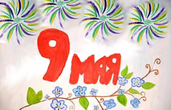

Тема: 9 Травня -- день пам'яті примирення
Хід заняття ( розповідь вчителя):
Друга світова війна – глобальний військовий конфлікт в історії Землі та причина найбільших трагедій ХХ століття. У війні взяли участь 80% людства, бойові дії вели 2/3 існуючих на той момент держав. Війна розпочалася 1 вересня 1939 р. із вторгнення військ нацистської Німеччини до Польщі, а завершилася 2 вересня 1945 р. із беззастережною капітуляцією Японії. Під час війни були здійснені найбільші в історії злочини проти людства (зокрема Голокост), а також вперше і востаннє використана в бою атомна зброя. До армій ворогуючих сторін було залучено понад 110 млн солдат, загальні втрати військових та цивільного населення складають від 50 до 85 млн осіб. За результатами війни було створено ООН (Україна – один із засновників) та сформовано сучасну систему міжнародних відносин.
Друга світова війна для України розпочалася 1 вересня 1939 р. із німецьким вторгненням в Польщу. 110-120 тис. українців у лавах Війська Польського розпочали світову боротьбу проти нацизму, 8 тис. з них загинуло протягом місяця війни. Також 1 вересня Люфтваффе бомбардувало Львів та інші західноукраїнські міста, що перебували у складі Польщі. Між 12 та 22 вересня Львів пережив подвійну облогу із заходу нацистськими військами, із сходу – радянськими.
Фашисти хотіли зруйнувати все, що було створено розумом та працею людей. А що вони хотіли зробити з населення України? Частину його знищили , частину перетворили в рабів.
Друга світова війна - одна з трагічних сторінок в історії українського народу. Україна втратила п'яту частину населення: близько 3млн. чол. На фронтах, і 5,5млн. у зоні окупації. Міста обезлюдніли і лежали в руїнах. Понад 10млн. жителів України залишились без даху над головою і жили в непристосованих приміщеннях та землянках.
Було зруйновано і спалено 714 міст й селищ, понад 28тис. сіл, 800тис. чол. втратив Київ, майже по 200тис. - Одеса і Харків, 100тис. – Рівне.
Промисловість і с/г перебували в стані повної розрухи. Було знищено 16 150 підприємств, 27 910 колгоспів, 872 радгоспи,2 300 МТС.
На примусові роботи до Німеччини було вивезено 2,4млн чол.. В Україні було організовано понад 230 таборів, де загинуло 1 366 тис. військовополонених. За опір окупантами разом усіма жителями було спалено близько 230 сіл.
З України вивозили все, що можна було забрати: устаткування заводів і фабрик,, яке не вдалося вчасно евакуювати, сировину і матеріали, худобу, продукти. В ешелони вантажили полтавський чорнозем, викопали й забрали до Німеччини понад 1 млн. фруктових дерев. З музеїв вивезли понад 40 тис. найцінніших творів мистецтва, історичних реліквій. Тільки прямі збитки заподіяні німецько-фашистськими загарбниками народному господарству України становили 285 млрд. крб.
І сивіли від спраги лани.
В сірім небі кружились лелеки,
А земля - в димовищі війни.
Територія України з перших днів війни перетворилась у фронтову смугу, на якій місяцями точились важкі бої. Особливо запеклим був танковий бій у районі Луцьк -Броди - Дубно - Рівне, де наступаючі німецькі війська на деякий час були зупинені. Це був перший великий танковий бій на початковому етапі війни, де з обох сторін взяло участь 1 500 танків.
Підбиття підсумків виховної години:
Кожен учень отримує емблему з зображенням червоного маку, символу примирення, на якій він матиме змогу записати свої найкращі побажання для України. Діти по черзі виходять до дошки, де знаходиться плакат із зображенням троянди окутаної колючою проволкою, та прикріпляють свої маки, озвучуючи кожен своє побажання.
Пісня учениці « Маки червоні».
Малюнки учнiв 3-Б класу
3 - Б кл. Семенченко Аміна
3 - Б кл. Бiлоус Анастасiя